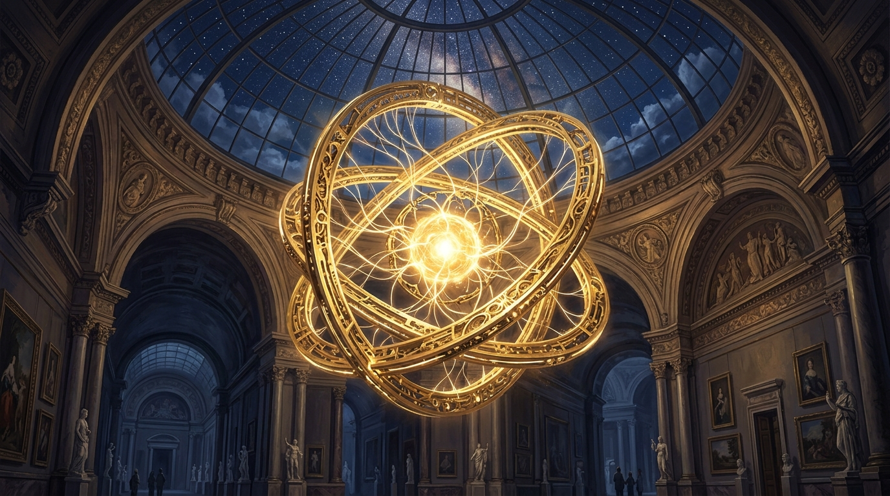
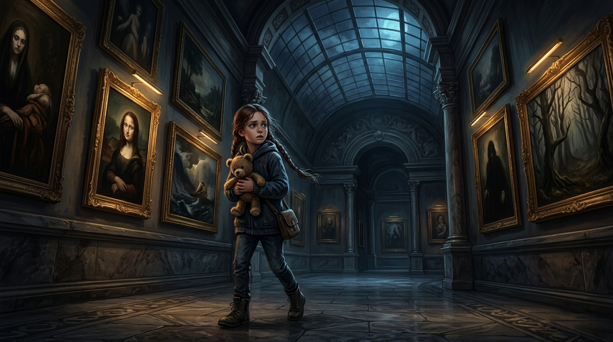
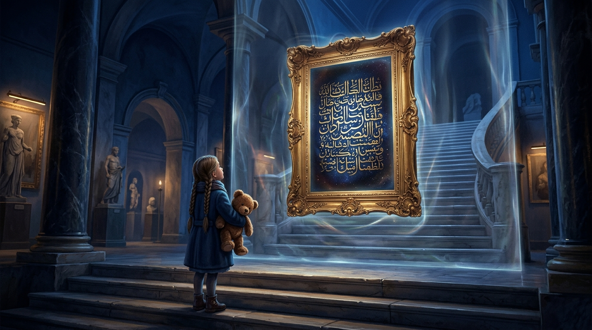
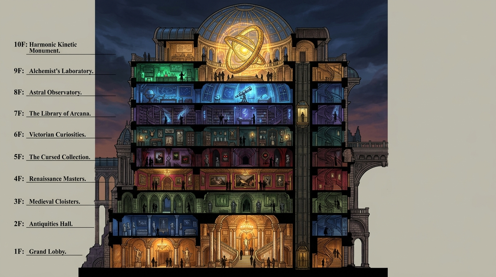
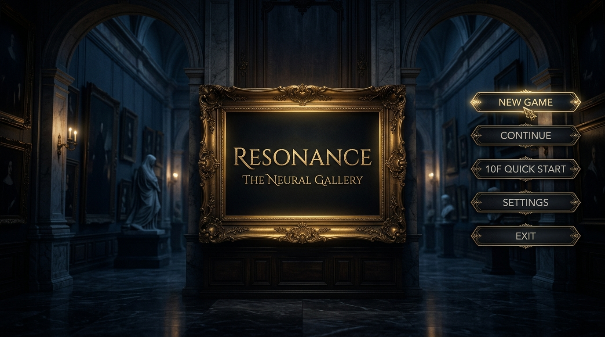
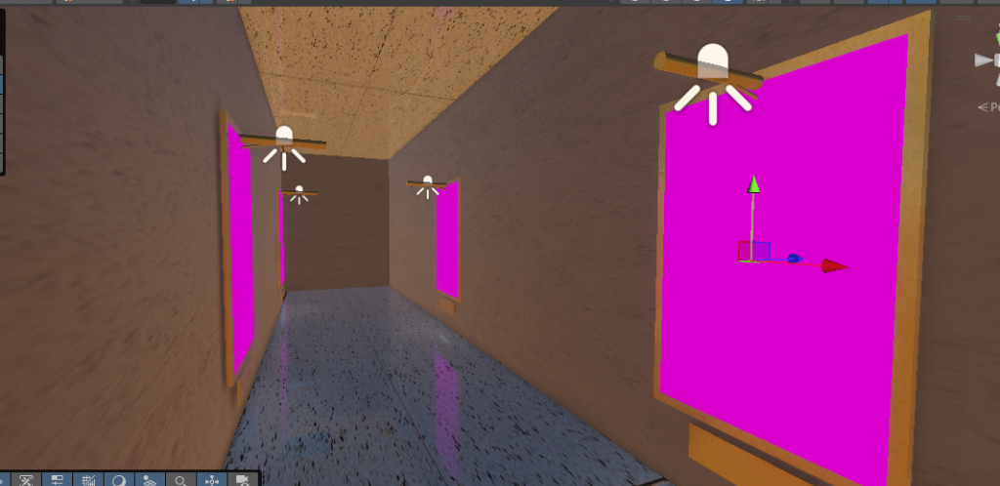
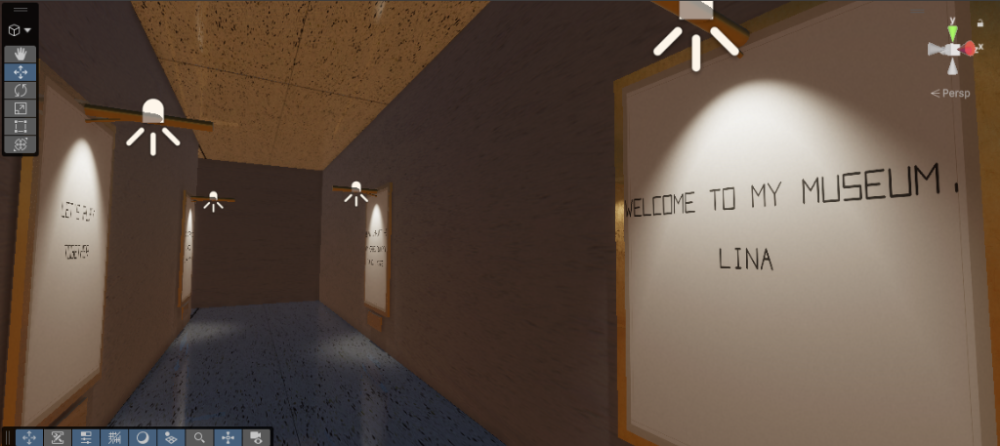

RESONANCE
The Neural Gallery
8번 출구의 무한 루프 심리 추리와 Ib의 기괴하고 매혹적인 미술관 서사가 결합된
차세대 1인칭 3D 심리 공포 하이브리드 어드벤처 프로젝트
Table of Contents (전체 목차)
제목의 의미: RESONANCE & 바이스만 갤러리
🔮 1. RESONANCE (공명)
인간의 뇌파와 예술 작품이 서로 진동하며 하나로 동조되는 초현실 현상. 10층의 거대 하모닉 링에 닿는 순간, 미술관 전체가 현실과 단절된 푸른 밤의 무한 루프 공간으로 왜곡됩니다.
🏛️ 2. 바이스만 갤러리 (Weismann Gallery)
천재 예술가이자 뇌과학자 칼 바이스만(Carl Weismann)이 자신의 신경망과 영혼을 복제하여 담아낸 살아 숨 쉬는 거대 디지털 아트 갤러리.
⚠️ 3. 시대에 던지는 메시지
"AI와 신경과학이 인간의 영혼과 고유한 예술의 영역까지 복제하려는 현대 기술 문명에 대한 의문과 경고."

참고 및 모티브가 된 명작 게임
The Exit 8 (8번 출구)
심리 추리 메커니즘
미세한 이상현상(Anomaly)을 찾아내 전진/유턴을 선택하는 심리적 긴장감을 10층 하강 구간에 이식하여 심리적 추리 재미를 극대화했습니다.
Ib (이브 - 게르테나 미술관)
예술 서사 & 동료 & 보스전
살아 움직이는 액자, 화병 세이브 & 붉은 장미 체력, 청년/소녀 동료 합류 및 배신자 보스전 서사를 현대적 3D HDRP로 오마주했습니다.
3단계 하이브리드 게임플레이 & 보스전 서사

부모님과 갤러리 감상 ➔ 3층 도달 시 내려가는 계단이 봉쇄되고 보이지 않는 벽이 생기며 공포 시작!
계단 앞 복도를 막아선 의문의 관리인 NPC에게 관찰 퀴즈를 맞추고 통과! (3/5/7/9층 유리 화병 세이브 & 힐링)
10층 하모닉 링 폭주로 푸른 밤 전환! 벽면에 "WELCOME TO MY MUSEUM, LINA" 문구와 함께 8번 출구 룰 가동!
• 8층: 청년(게리) 합류 / 4층: 소녀(메리) 합류
• 이상현상 파훼: 유턴 시 다음 층으로 즉시 심리스 텔레포트 전진 (오답 시 9F 계단 리셋)
• 2층 반전: 소녀가 모든 장난의 주동자! 거대 그림으로 계단을 막고 메리 보스전 발발 ➔ 격파 후 1층 탈출!
수수께끼 관리인 NPC & 복도 차단 / 비켜서기 시스템

👤 계단 복도 차단 콜라이더 & 대화형 퀴즈 시스템
3층부터 10층까지 위층으로 가는 계단 복도를 미술관 관리인 NPC와 비비기 방지 차단 박스 콜라이더가 가로막고 있습니다. 다가가서 [E] 키를 눌러 미술관 관찰형 퀴즈를 맞추면 NPC가 정답 대사와 함께 부드럽게 옆으로 비켜서며 복도를 열어줍니다.
➔ 정답: 7 (seven)
➔ 정답: red (crimson)
➔ 정답: brain (mind / soul)
➔ 정답: blood (red blood)
➔ 정답: 5 (five)
➔ 정답: weismann (carl)
➔ 정답: resonance (the resonance)
1층~10층 층별 의미 & 생명의 화병 세이브 시스템

3중 하모닉 링과 영혼 코어. 푸른 밤 루프 발원지.
생존 수칙 액자. 물병 세이브 & 10층 계단 수수께끼.
시선 추적 초상화 & 갇혀있던 청년 구출 동행.
유리 화병 1회용 장미 체력 완충 & 세이브포인트 갱신.
유리 화병 속 장미 & 신비로운 노란 머리 소녀 합류.
소녀의 정체 폭로! 거대 캔버스 & 촉수 피격 공방 결전.
부모님과 재회하며 아침 햇살 속 탈출 성공.
메인 메뉴 / 사망 다잉메시지 / 클리어 UI 시스템

- • 게임 스타트: 1층 프롤로그부터 시작
- • 이어하기: 최근 화병 세이브 지점(3/5/7/9F)에서 로드
- • 10층부터 (Quick Start): 10층 도달 이력 유저만 해금
- • 설정 (Settings): 마스터/BGM/SFX 음향 & 마우스 감도 조절
괴물/촉수 피격으로 장미 3송이 소진 시 붉은 다잉 메시지와 함께 [세이브부터] / [메뉴로] 버튼 제공.
개발에 활용된 AI 기술 및 파이프라인
미드저니 (Midjourney)
& 구글 Labs (Google Labs / ImageFX)
벽면에 걸려있는 모든 명화 및 이상현상 그림 제작에 활용 예정
- 고전 유화 풍의 클래식 명화 텍스처 생성
- 시선이 따라오는 눈동자, 피 흘리는 변형 아트
- 밤 전환 시 섬뜩한 가이드 텍스트 그림
매쉬 AI (Meshy AI)
미술관 내 예술 작품 3D 모델링 제작에 활용 예정
- 회전하는 사색하는 흉상 조각상 모델링
- 유리 화병 속 붉은 장미 & 시든 꽃잎
- 황동 하모닉 링 및 앤틱 가구 오브젝트
Gemini & Antigravity
Unity C# 게임플레이 아키텍처 및 에디터 툴 자동화
- 3~9F 수수께끼 투명벽 & 화병 세이브 시스템
- 정밀 8번 출구 Y축 분리 트리거 시스템
- HDRP 3000 lux 픽처 조명 및 딥 블루 밤하늘
트러블슈팅 & 디자이너 개발불가 가이드
🛠️ 실제 발생했던 에러 화면 & 해결 사례

런타임 머티리얼 인스턴스 소실 ➔ sharedMaterial 에디터 캐싱으로 해결.

건축 빌드 시 텍스트 하드코딩 ➔ 낮/밤 명화 자동 스왑 시스템으로 해결.
🚫 디자이너 전달: "이런 방향은 개발 불가!"
10개 층이 한 씬에 공존하므로 드로우콜 폭증으로 렉 발생 ➔ Meshy 모델링은 로우~미드폴리 및 LOD 필수.
HDRP 성능 급감 ➔ 그림 정면 핀조명 3000 lux 단일 규격 엄수.
8번 출구 체크포인트 시스템 붕괴 ➔ 정해진 층고(7.0m) 유지.
현재 개발 진행률 & 디자이너 협업 요청 리스트
- ✅ 10개 층 수직 타워 건축 & HDRP 조명
- ✅ 3~9층 수수께끼 투명벽 & 타이핑 UI
- ✅ 3/5/7/9층 유리 화병 세이브 & 힐링
- ✅ 모퉁이 회전 층감지 & 8번 출구 루프 룰
- ✅ 메인메뉴 / 사망 다잉메시지 / 클리어 UI 로직
- ⏳ 3~9층 층별 Ib 스타일 공포 퍼즐 인터랙션 세부 기믹
- ⏳ 8층 청년(게리) & 4층 소녀(메리) NPC AI 팔로잉 모션
- ⏳ 2층 메리 보스전 캔버스 파괴 & 촉수 패턴 애니메이션 연동
- ⏳ 인게임 사운드(발걸음 ASMR, 공명 BGM, 피격 SFX) 믹싱
정상 고전 명화 10종 + 이상현상 변형 명화 10종 (2K 규격)
사색하는 흉상 조각상, 생명의 화병, 2층 거대 보스 캔버스 모델링
타이틀 로고, 수수께끼 프레임 UI, 앤틱 입력 모달 창
진행 상황 & 플레이 시연 영상
✅ 구현 완료 핵심 시스템
RESONANCE 게임플레이 데모
1층 프롤로그부터 10층 동상 컷씬, 밤 전환 후 이상현상 판별 및 계단 하강 루프의 실제 구동 영상을 확인하실 수 있습니다.
※ 링크를 누르면 해당 데모 영상 페이지(https://youtu.be/3MR5uaAdx30)로 이동합니다.